무선설비기사 (2018-03-04 기출문제)
1과목: 디지털 전자회로
1. 60[Hz] 정현파 신호가 전파정류기에 입력될 경우 출력신호의 주파수는?
- 0[Hz]
- 30[Hz]
- 60[Hz]
- 120[Hz]
(정답률: 84%)

2. 다음 중 스위칭 정전압 회로에 대한 설명으로 틀린것은?
- 높은 효율을 갖는다.
- 제어소자의 스위칭 동작으로 대부분의 시간이 포화와 차단으로 동작한다.
- 고역통과필터를 사용한다.
- 펄스폭 변조기를 사용한다.
(정답률: 74%)
3. 베이스 접지 증폭회로에서 차단주파수가 50[MHz]인 트랜지스터를 이미터 접지로 했을 때의 차단주파수는 얼마인가? (단, β=99라 한다.)
- 100[kHz]
- 300[kHz]
- 500[kHz]
- 700[kHz]
(정답률: 66%)
4. 다음과 같은 궤환 증폭회로(부궤환)의 궤환 증폭도(Af)는?
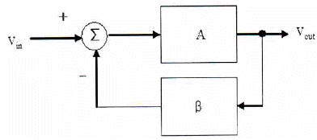
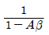
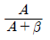
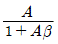
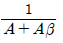
(정답률: 79%)
5. 어떤 차동증폭기의 차동이득이 1,000이고 동상이득이 0.1일 때, 이 증폭기의 동상신호제거비(CMRR) 값은?
- 10
- 100
- 1,000
- 10,000
(정답률: 77%)
6. 다음 회로의 종류는?
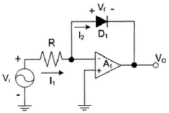
- 반파정류회로
- 전파정류회로
- 피크검출기
- 대수 증폭기회로
(정답률: 66%)
7. 증폭기와 정궤환 회로를 이용한 발진회로에서 증폭기의 이득을 A, 궤환율을 β라고 할 때, βA＞1이면 출력되는 파형은 어떤 현상이 발생하는가?
- 출력되는 파형의 진동이 서서히 사라진다.
- 출력되는 파형은 진폭에 클리핑이 일어난다.
- 지속적으로 안정적인 파형이 발생한다.
- 출력되는 파형은 서서히 진폭이 작아진다.
(정답률: 81%)
8. 다음 중 온도 특성이 좋고, 전원이나 부하의 변동에 대하여 비교적 안정도가 좋기 때문에 안정한 주파수의 발생원으로 많이 쓰이는 발진회로는?
- 빈 브리지형 발진회로
- 수정 발진회로
- RC 발진회로
- 이상형 발진회로
(정답률: 81%)
9. FM 변조에서 최대 주파수 편이가 80[kHz]일 때 주파수 변조파의 대역폭은 약 얼마인가?
- 40[kHz]
- 60[kHz]
- 80[kHz]
- 160[kHz]
(정답률: 82%)
10. FM 검파 방식 중 주파수 변화에 의한 전압 제어 발진기의 제어 신호를 이용하여 복조하는 방식은?
- 계수형 검파기
- PLL형 검파기
- 포스터-실리형 검파기
- 비 검파기
(정답률: 82%)
11. 다음 중 주파수 변조에 대한 설명으로 틀린것은?
- 협대역 FM과 광대역 FM방식이 있다.
- 변조신호에 따라 반송파의 주파수를 변화시킨다.
- 선형 변조방식이다.
- 반송파로는 cos 함수 또는 sin 함수와 같은 연속함수를 사용한다.
(정답률: 80%)
12. 다음 중 아날로그 신호를 디지털 신호로 변환할 때 양자화 잡음의 경감 대책이 아닌 것은?
- 압신기를 사용한다.
- 양자화 스텝수를 감소시킨다.
- 양자화 비트수를 증가시킨다.
- 비선형화 한다.
(정답률: 69%)
13. 다음 중 구형파를 발생시키는 발진기는?
- 수정발진기
- 멀티바이브레이터
- 플레이트동조발진기
- 다이네트론발진기
(정답률: 80%)
14. 다음 회로에서 Vi ＞ VB일 때, 회로의 출력 파형은 어느 것인가? (단, 다이오드의 VT 값은 무시한다.)
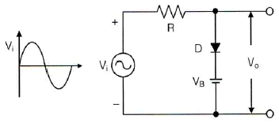
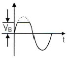
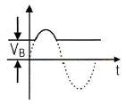
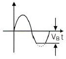
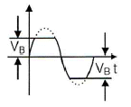
(정답률: 80%)
15. 다음 회로에서 Vcc=5[V]일 때 출력 전압은? (단, A=5[V], B=0[V], 다이오드의 VT=0[V]이다.)
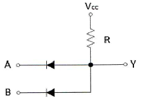
- 0[V]
- 2.5[V]
- 5[V]
- 7.5[V]
(정답률: 78%)
16. 다음 그림의 논리 회로에 대한 논리식은?
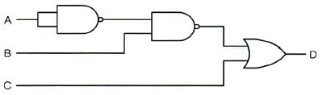
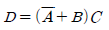
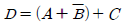
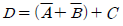
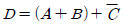
(정답률: 80%)
17. 그림의 회로에서 A=B=0이면 X1과 X2의 값은 각각 얼마인가?
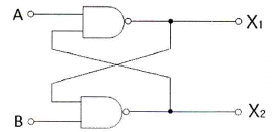
- X1=0, X2=0
- X1=0, X2=1
- X1=1, X2=0
- X1=1, X2=1
(정답률: 76%)
18. 플립플롭 6개로 구성된 계수기가 가질 수 있는 최대 2진 상태 수는?
- 16개
- 32개
- 64개
- 85개
(정답률: 84%)
19. 다음 중 전가산기(Full Adder)를 정확히 설명한 것은?
- 자리올림을 더하여 그 자리의 2진수의 덧셈을 완전히 하는 회로이다.
- 아랫자리의 자리올림을 더하여 홀수의 덧셈을 하는 회로이다.
- 아랫자리의 자리올림을 더하여 짝수의 덧셈을 하는 회로이다.
- 자리올림을 무시하고 일반 계산과 같이 덧셈하는 회로이다.
(정답률: 82%)
20. 다음 중 특정 비트의 값을 무조건 0으로 바꾸는 연산은?
- XOR 연산
- 선택적-세트(Selective-Set) 연산
- 선택적-보수(Selective-Complement) 연산
- 마스크(Mask) 연산
(정답률: 82%)
2과목: 무선통신 기기
21. 다음 그림은 어떤 변조방식의 블록도를 나타내는 것인가? (단, m(t)는 입력정보이고, fc는 반송주파수이다.)
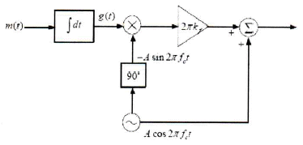
- Narrow Band PM(Phase Modulation)
- Narrow Band FM(Frequency Modulation)
- DSB-TC(Double Side Band - Transmitted Carrier)
- VSB(Vestigial Side Band)
(정답률: 80%)
22. 다음 중 직접 FM(Frequency Modulation) 변조방식이 아닌 것은?
- 콘덴서 마이크로폰을 이용한 변조
- 가변용량 다이오드를 이용한 변조
- 리액턴스관 변조
- 암스트롱 변조
(정답률: 82%)
23. 주파수 90[MHz]에 반송파를 6[kHz] 정현파 신호로 FM(Frequency Modulation) 변조했을 때 최대주파수 편이가 ±76[kHz]일 경우, 점유주파수대폭은 몇 [kHz]인가?
- 12[kHz]
- 82[kHz]
- 152[kHz]
- 164[kHz]
(정답률: 82%)
24. 2진 ASK(Amplitude Shift Keying) 신호의 전송속도가 1,200[bps]이면 보[baud] 속도는 얼마인가?
- 300[baud/초]
- 400[baud/초]
- 600[baud/초]
- 1,200[baud/초]
(정답률: 80%)
25. 다음 중 통신에서 기저대역 필터의 사용목적으로 옳은 것은?
- 신호를 정해진 대역폭으로 제한하여 송신하고 심볼간 간섭을 제거하기 위함이다.
- 안테나 길이를 작게 만들 수 있기 때문이다.
- 대역제한과는 관계없이 심볼간 간섭을 제거하기 위함이다.
- 아날로그필터만 구현하여 부피를 적게 하기 위함이다.
(정답률: 82%)
26. 다음 중 OFDM(Orthogonal Frequency Division Multiplexing)에 대한 설명으로 틀린 것은?
- 다수 반송파 시스템으로서 반송파 사이에 직교성이 보장되도록 한다.
- 주파수 선택성 페이딩이나 협대역 간섭에 강인하게 사용할 수 있다.
- 송수신단에서 복수의 반송파를 변복조하기 위해 IFFT/FFT를 사용할 수 있으므로 간단한 구조로 고속 구현이 가능하다.
- 부반송파들을 분리하기 위해 보호대역이 필요하다.
(정답률: 73%)
27. 다음 중 FSK(Frequency Shift Keying) 신호에 대한 설명으로 틀린 것은?
- FSK 신호는 진폭이 일정하기 때문에 채널의 진폭변화에 덜 민감하다.
- FSK는 정보 데이터에 따라서 반송파의 순시주파수가 변경되는 방식이다.
- FSK 신호를 주파수가 다른 2개의 OOK(On/Off Keying) 신호의 합으로 볼 수 있다.
- FSK 신호의 대역폭은 ASK(Amplitude Shift Keying)나 PSK(Phase Shift Keying)에 비하여 좁다.
(정답률: 84%)
28. 수신된 펄스열의 눈 형태(Eye Pattern)을 관찰하면 수신기의 오류확률을 짐작할 수 있다. 수신된 신호를 표본화하는 최적 시간은 언제인가?
- 눈의 형태(Eye Patter)가 가장 크게 열리는 순간
- 눈의 형태(Eye Patter)가 닫히는 순간
- 눈의 형태(Eye Patter)가 중간 크기인 순간
- 눈의 형태(Eye Patter)가 여러 개 겹치는 순간
(정답률: 88%)
29. 16진 QAM(Quadrature Amplitude Modulation)의 대역폭 효율은 몇 [bps/Hz]인가?
- 1[bps/Hz]
- 2[bps/Hz]
- 4[bps/Hz]
- 8[bps/Hz]
(정답률: 88%)
30. 다음 중 무선 항법 장치가 아닌 것은?
- VOR(VHF Omnidirectional Radio Range)
- DME(Distance measurement Equipment)
- ILS(Instrument Landing System)
- NBDP(Narrow-Band Direct Printing)
(정답률: 69%)
31. 다음 중 충전 종료시 축전지의 상태로 옳은 것은?
- 전해액의 비중이 낮아진다.
- 단자 전압이 하강한다.
- 가스(물거품)가 발생한다.
- 전해액의 온도가 낮아진다.
(정답률: 84%)
32. 다음 중 전력장치인 수전설비에 해당하지 않는 것은?
- 비교기
- 유입개폐기
- 단로기
- 자동 전압 조정기
(정답률: 81%)
33. 정류회로에서 출력 직류전압이 200[V]이고, 리플전압이 2[V]라면 맥동률(리플)은 얼마인가?
- 1[%]
- 2[%]
- 5[%]
- 10[%]
(정답률: 84%)
34. 태양광 발전시스템에서 DC전기를 사용할 때 필요치 않은 자재는?
- 태양전지모듈
- 밧데리(축전지)
- 인버터
- 역류방지 다이오드
(정답률: 59%)
35. 다음 중 싱크로스코프(Synchroscope)에 대한 설명으로 틀린 것은?
- 소인시간은 입력신호의 반복주기에 비례하여 설정된다.
- 파형의 부분 확대가 가능하다.
- 비주기성 파형이나 단발현상의 파형 측정에 이용할 수 있다.
- 높은 주파수 성분을 포함하는 여러 가지 파형을 정지시켜 측정할 수 있다.
(정답률: 60%)
36. 수신기의 안정도는 수신기를 구성하는 어떤 구성요소의 주파수 안정도에 의해 결정되는가?
- 동조회로
- 고주파 증폭기
- 국부 발진기
- 검파기
(정답률: 79%)
37. 다음 중 AM(Amplitude Modulation) 송신기의 신호대 잡음비 측정에 필요하지 않는 것은?
- 저주파 발진기
- 감쇠기
- 전력계
- 직선 검파기
(정답률: 72%)
38. 다음 중 급전선의 특성 임피던스 Zo와 급전선을 통과하는 전파의 전파속도를 v로 표현할 경우 급전선이 가지는 인덕턴스값(L)을 구하는 식으로 맞는 것은?
- L = Zo / v
- L = 1 / Zo
- L = v × Zo
- L = 1 / (v × Zo)
(정답률: 79%)
39. 단상 반파 정류회로에서 직류 출력전류의 평균치를 측정하면 어떤 값이 얻어지는가? (단, Im은 입력 교류전류의 최대치이다.)
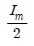
- Im
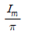
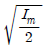
(정답률: 67%)
40. 다음 중 UPS(Uninterruptible Power Supply)의 구성요소가 아닌 것은?
- 인버터부
- 축전지
- 쵸퍼부
- 동기절체 스위치부
(정답률: 75%)
3과목: 안테나 공학
41. 전파의 속도는 매질의 어떤 양에 따라 변화하는가?
- 점도와 밀도
- 밀도와 도전율
- 도전율과 유전율
- 유전율과 투자율
(정답률: 80%)
42. 다음 중 TEM파(Transverse Electromagnetic Wave)에 대한 설명으로 옳은 것은?
- 전파 진행방향에 전계성분만 존재하고 자계성분은 존재하지 않는다.
- 전파 진행방향에 자계성분만 존재하고 전계성분은 존재하지 않는다.
- 전파 진행방향에 전계, 자계 성분이 모두 존재하지 않는다.
- 전파 진행방향에 전계, 자계 성분이 모두 존재한다.
(정답률: 81%)
43. 다음 중 자유공간에서 전력밀도 P를 옳게 표현한 식은? (단, E는 전계의 세기, H는 자계의 세기이다.)
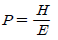
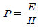
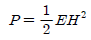
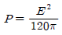
(정답률: 82%)
44. 무손실 전송선로의 특성 임피던스(Z0)는?
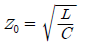
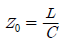
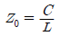
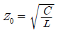
(정답률: 80%)
45. 임피던스가 50[Ω]인 급전선의 입력전력 및 반사전력이 각각 50[W]와 8[W]일 때의 전압반사계수는?
- 0.86
- 0.40
- 0.16
- 0.14
(정답률: 54%)
46. 다음 설명의 괄호 안에 맞는 말을 순서대로 배열한 것은?
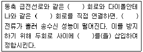
- 불평형 - 평형 - 평형 - 결합기(Stub)
- 불평형 - 평형 - 불평형 - 발룬(Balun)
- 평형 - 불평형 - 평형 - 결합기(Stub)
- 평형 - 불평형 - 불평형 - 발룬(Balun)
(정답률: 74%)
47. 다음 중 마이크로파 송신기의 전력 측정에 사용되는 방향성 결합기로 측정할 수 없는 것은?
- 정재파비
- 위상차
- 반사계수
- 방향성
(정답률: 70%)
48. 다음 중 도파관 임피던스 정합방법의 종류가 아닌 것은?
- 도체봉에 의한 정합
- 아이솔레이터에 의한 정합
- 창에 의한 정합
- 다이플렉서에 의한 정합
(정답률: 74%)
49. 등방성안테나를 기준 안테나로 하는 이득은?
- 절대이득
- 상대이득
- 지상이득
- 최대이득
(정답률: 85%)
50. 반파장 안테나에 10[A] 전류가 흐를 때 500[km] 지점에서 최대 복사방향에서의 전계강도는 약 얼마인가?
- 10[mV/m]
- 4.3[mV/m]
- 2.1[mV/m]
- 1.2[mV/m]
(정답률: 44%)
51. 전계강도가 100[mV/m]인 지점에 길이 75[m]의 수직접지안테나를 설치하였을 때 안테나에 유기되는 최대 유기 기전력은 약 얼마인가?(단, 사용주파수는 1[MHz]이다.)
- 9.5[V]
- 4.8[V]
- 3.7[V]
- 2.4[V]
(정답률: 56%)
52. 다음 중 야간에 방향 탐지시 발생되는 야간오차를 경감시키는 안테나는?
- 야기 안테나
- 빔 안테나
- 애드콕 안테나
- 루프 안테나
(정답률: 78%)
53. Phased Array 안테나의 각 안테나 소자에 공급하는 전류의 위상을 조정하면 어떤 특성을 얻을 수 있는가?
- 복사전력이 감소한다.
- 급전선의 VSWR이 낮아진다.
- 복사패턴의 방향을 바꿀 수 있다.
- 위상을 바꾸지 않을 때 보다 임피던스 정합이 용이하다.
(정답률: 68%)
54. 안테나 전류를 지선망의 각 분구(分區)에 똑같이 흘려서 안테나 전류가 기저부 근처에 밀집하는 것을 피하여 접지저항의 감소를 도모하는 접지방식은?
- 가상 접지
- 다중 접지
- 심굴 접지
- 방사상 접지
(정답률: 70%)
55. 대지면에 설치된 수직 접지 안테나로부터 지표면을 따라 전파가 진행할 때 감쇠가 적은 순서대로 바르게 배열한 것은?
- 해면, 평지, 산악, 도심지
- 도심지, 산악, 평지, 해면
- 해면, 도심지, 평지, 산악
- 도심지, 평지, 산악, 해면
(정답률: 86%)
56. 다음 중 신틸레이션(Scintillation) 페이딩에 대한 설명으로 틀린 것은?
- 대기 중 공기의 와류에 의한 직접파와 산란파의 간섭으로 발생한다.
- 수신 전계강도의 평균 레벨은 페이딩에 의해 변동이 심하다.
- 겨울보다 여름에 많이 발생한다.
- AGC(Automatic Gain Control)를 이용하여 방지할 수 있다.
(정답률: 45%)
57. 전리층의 높이가 지상 약 100[km] 정도이며 발생지역과 장소가 불규칙한 전리층은?
- D층
- Es층
- F1층
- F2층
(정답률: 82%)
58. 다음 중 인공잡음에 대한 설명으로 틀린 것은?
- 자동차에서 발생하는 잡음은 점화장치로부터의 잡음이 가장 강하며, 잡음 스펙트럼은 장파(LF)에서부터 극초단파(UHF)까지 광대역 상에 존재한다.
- 소형 정류자 모터를 사용하는 기기로부터 발생하는 잡음 스펙트럼은 장파(LF)에서부터 초단파(VHF)까지 광대역 상에 존재한다.
- 컴퓨터의 클럭 펄스에 의한 잡음 스펙트럼은 기본파만 있고 고조파 성분은 포함하지 않는다.
- 고압 송배전선로에서의 코로나 방전으로 발생한 잡음에 수신 장해를 받는 것은 주로 중파(MF) 대역의 라디오 방송이며, TV 및 FM방송은 거의 방해를 받지 않는다.
(정답률: 70%)
59. 다음 중 공전잡음의 종류가 아닌 것은?
- 클릭(Click) 잡음
- 그라인더(Grinder) 잡음
- 히싱(Hissing) 잡음
- 산탄(Shot) 잡음
(정답률: 74%)
60. 다음 중 잡음 방해개선 방법으로 틀린 것은?
- 전원측에 필터를 삽입하거나, 수신기에 진폭제한기를 설치한다.
- 수신기에 실효대역폭을 좁힌다.
- 수신 전력을 감소시킨다.
- 내부잡음 전력을 감소시킨다.
(정답률: 81%)
4과목: 무선통신 시스템
61. 다단 증폭시스템에서 종합 잡음지수를 가장 효과적으로 개선할 수 있는 시스템 구성요소로 적합한 것은?
- 전치 증폭기
- 자동 이득 조절기
- 대역 통과 필터
- 검파기
(정답률: 62%)
62. GSM(Global System for Mobile Communication) 시스템에서 한 멀티프레임(Multiframe)은 26개의 프레임으로 구성되어 있고 한 프레임은 8개의 슬롯(Slot)으로 구성되어 있다. 한 슬롯이 150비트를 전송하는 경우 멀티프레임 전송시간이 150[ms]라면 전송률은 얼마인가?
- 208[kbps]
- 912[kbps]
- 1,200[kbps]
- 3,900[kbps]
(정답률: 63%)
63. 다음 중 슈퍼 헤테로다인(Super Heterodyne) 수신 방식의 장점이 아닌 것은?
- 특정한 주파수에 대한 선택도를 크게 할 수 있다.
- 주파수 변환에 따른 혼신 방해와 잡음이 적다.
- 수신 주파수와 관계없이 수신기의 감도와 선택도는 거의 일정하다.
- 수신기의 이득을 크게 할 수 있고 출력 변동이 적다.
(정답률: 52%)
64. DSSS(Direct Sequence Spread Spectrum) 시스템에서 한 비트에 코드 길이가 8인 PN(Pesudo Noise) Sequence를 곱해 스펙트럼을 확산시켰을 경우수신 단에서의 처리 이득(Processing Gain)으로 가장 근사한 값은?
- 2[dB]
- 5[dB]
- 9[dB]
- 12[dB]
(정답률: 71%)
65. 마이크로웨이브를 이용하는 고정 통신 방식의 시스템에서 송신 안테나는 수평 편파용을 이용하고 수신 안테나는 수직 편파용을 이용한 경우 일어나는 현상은?
- 간헐적으로 이득이 크게 증가한다.
- 잡음이 감소한다.
- 이득에 전혀 영향을 받지 않아 통신하는 데 영향이 없다.
- 이득이 현저히 줄게 되어 통신에 지장을 받는 경우도 있다.
(정답률: 65%)
66. 다음 중 GPS의 측위 오차가 아닌 것은?
- 구조적인 요인에 의한 거리 오차(Range Error)
- 위성의 배치 상황에 따른 기하학적 오차
- C/A 코드(Coarse Acquisition) 오차
- 선택적 이용성에 의한 오차(SA : Selective Availability)
(정답률: 71%)
67. 다음 중 하드 핸드오프의 종류가 아닌 것은?
- 교환기(Exchange)간 핸드오프
- Frame Offset간 핸드오프
- Dummy Pilot간 핸드오프
- Softer간 핸드오프
(정답률: 84%)
68. 다음 중 이동통신용 단말기와 기지국사이의 무선 채널에 발생하는 다중경로 페이딩(Multi Path Fading) 현상의 감소 기법이 아닌 것은?
- MIMO(Multiple Input Multiple Output) 기술
- 적응 등화기(Adaptive Equalizer) 기술
- 확산 대역(Spread Spectrum) 기술
- 전력제어(Power Control) 기술
(정답률: 60%)
69. 국내지상파 HDTV 표준방식인 ATSC(Advanced Television System Committee)의 변조방식은?
- VSB(Vestigial Side Band Modulation)
- 8-VSB(8-Vestigial Side Band Modulation)
- QAM(Quadrature Amplitude Modulation)
- OFDM(Orthogonal Frequency Division Multiplexing)
(정답률: 72%)
70. 다음 LAN(Local Area Network) 전송방식 중 베이스밴드(Base Band) 방식의 특징에 해당되는 것은?
- 주파수분할다중화(FDM) 방식을 이용한다.
- 한 회선에 여러 개의 신호를 보낼 수 있다.
- 원래의 신호를 변조하지 않고 그대로 전송하는 방식이다.
- 통신경로를 여러 개의 주파수 대역으로 나누어 쓰는 방식이다.
(정답률: 76%)
71. 다음 중 Bluetooth 기술에 대한 설명으로 틀린것은?
- 근거리 무선통신 기술로 양방향 통신이 가능하다.
- 2.4[GHz]의 ISM(Industrial Scientific Medical) 대역에서 통신한다.
- IEEE 802.11b와의 주파수 충돌 영향을 줄이기 위해 AFH(Adaptive Frequency Hopping) 방식을 사용할 수 있다.
- 프로토콜 스택의 물리계층에서 사용되는 변조방식은 16QAM(Quadrature Amplitude Modulation)이다.
(정답률: 69%)
72. 다음 중 프로토콜 표준화에 대한 설명으로 틀린것은?
- 표준화대상에 있어 대폭적인 개방성을 추구하고 있다.
- 광범위한 통신망과의 적응성을 확보하고 있다.
- ITU-T에서도 권고안(X-200 계열)에 OSI참조 모델과 동일한 내용을 권고하고 있다.
- 부분적, 개별적 프로토콜 표준화에 역점을 두고 있다.
(정답률: 68%)
73. 다음 중 BSC(Binary Synchronous Communication) 프로토콜 특성에 대한 설명으로 틀린 것은?
- 문자 방식의 프로토콜이다.
- 연속적 ARQ(Automatic Repeat Request) 방식에 사용할 수 있다.
- 전이중은 불가능하다.
- 사용 코드에 제한이 있다.
(정답률: 53%)
74. 다음 중 OSI 7계층 중 전송계층(Transport Layer)의 기능에 해당되지 않는 것은?
- 연결제어 수행
- 종단 대 종단에 대해 흐름제어와 오류제어 수행
- 메시지의 분할과 재조립
- 응용 프로세스간의 대화단위 및 대화방식 결정
(정답률: 57%)
75. 다음 중 OSI 7계층에서 데이터링크 계층의 역할(기능)이 아닌 것은?
- 오류제어
- 흐름제어
- 경로설정
- 데이터의 노드 대 노드 전달
(정답률: 66%)
76. MIP(Mobile IP)를 사용하는 경우 이동노드들이 어떤 Foreign Link에 접속되어 있을 때 그 이동노드들을 관리하기 위하여 배정하는 임시주소를 무엇이라 하는가?
- Tunneling
- Binding
- COA(Change of Address)
- Home Agent
(정답률: 74%)
77. 다음 중 최적의 무선 환경을 구축하기 위한 기지국 통화량 분산 방법이 아닌 것은?
- 섹터간 커버리지 조정
- 인접 셀간 커버리지 조정
- 기지국 이설 및 추가
- 출력신호를 감소시킨다.
(정답률: 76%)
78. 이득이 10[dB]이고 잡음지수가 8[dB]인 증폭기 후단에 잡음지수가 12[dB]인 증폭기가 있는 경우 종합잡음지수는 약 얼마인가?
- 8.5[dB]
- 8.7[dB]
- 9.1[dB]
- 9.5[dB]
(정답률: 68%)
79. 다음 중 무선통신 안테나 선정 시 검토사항으로 틀린 것은?
- 전후방비가 커야 한다.
- 정재파비가 커야 한다.
- 급전선 계통의 손실이 작아야 한다.
- 안테나 결합손실이 작고 직진성이 좋아야 한다.
(정답률: 75%)
80. 무선국 허가증에 등가등방복사전력(EIRP)이 3.28[dB]로 기재되어 있을 때 실효복사전력(ERP)은 몇 [dB]인가? (단, 반파장 다이폴안테나를 기준으로 한다.)
- 2.0[dB]
- 3.28[dB]
- 5.43[dB]
- 6.56[dB]
(정답률: 74%)
5과목: 전자계산기 일반 및 무선설비기준
81. 다음 중 CPU의 개입 없이 메모리와 주변장치 간에 데이터를 전송할 수 있는 것은?
- 인터럽트(Interrupt)
- 스풀링(Spooling)
- 버퍼링(Buffering)
- DMA(Direct Memory Access)
(정답률: 72%)
82. 다음 중 플립플롭(Flip-Flop) 회로를 사용하여 만들어진 메모리는?
- DRAM(Dynamic Random Access Memory)
- SRAM(Static Random Access Memory)
- ROM(Read Only Memory)
- BIOS(Basic Input Output System)
(정답률: 61%)
83. 10진수 -593을 10의 보수와 2의 보수로 옳게 표현한 것은?(단, 10의 보수는 5자리수, 양부호는 0, 음부호는 9로 표현하고, 2의 보수는 12비트, 양부호는 0, 음부호는 1로 표현한다.)
- 10의 보수: 99406, 2의 보수: 110110101110
- 10의 보수: 99406, 2의 보수: 110110101111
- 10의 보수: 99407, 2의 보수: 110110101110
- 10의 보수: 99407, 2의 보수: 110110101111
(정답률: 61%)
84. 다음 중 제일 먼저 삽입된 데이터가 제일 먼저 출력되는 파일구조는?
- 스택(Stack)
- 큐(Queue)
- 리스트(List)
- 트리(Tree)
(정답률: 75%)
85. 메모리관리에서 빈 공간을 관리하는 Free 리스트를 끝까지 탐색하여 요구되는 크기보다 더 크되, 그 차이가 제일 작은 노드를 찾아 할당해주는 방법은?
- 최초적합(First-Fit)
- 최적적합(Best-Fit)
- 최악적합(Worst-Fit)
- 최후적합(Last-Fit)
(정답률: 85%)
86. 다음 중 분산 처리 시스템에 대한 설명으로 틀린것은?
- 중앙집중형시스템 개념과는 반대되는 시스템이다.
- 한 업무를 여러 컴퓨터로 작업을 분담시킴으로써 처리량을 높일 수 있다.
- 보안성이 매우 높다.
- 업무량 증가에 따른 점진적인 확장이 용이하다.
(정답률: 82%)
87. 다음 중 기계어로 번역된 프로그램은?
- 목적 프로그램(Object Program)
- 원시 프로그램(Source Program)
- 컴파일러(Compiler)
- 로더(Loader)
(정답률: 73%)
88. 다음 중 오퍼레이팅 시스템에서 제어 프로그램에 속하는 것은?
- 데이터 관리프로그램
- 어셈블러
- 컴파일러
- 서브루틴
(정답률: 73%)
89. 다음 중 레지스터에 대한 설명으로 틀린 것은?
- 레지스터는 프로세서 내부에 위치한 저장소(Storage)이다.
- 누산기(Accumulator)는 레지스터의 일종이다.
- 특정한 주소를 지정하기 위한 레지스터를 상태(Status) 레지스터라 부른다.
- 레지스터는 실행과정에서 연산결과를 일시적으로 기억하는 회로이다.
(정답률: 74%)
90. 다음 설명으로 옳은 주소 지정방식은?
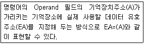
- 즉시 주소 지정방식
- 직접 주소 지정방식
- 변위 주소 지정방식
- 간접 주소 지정방식
(정답률: 56%)
91. 특정한 주파수를 이용할 수 있는 권리를 특정인에게 부여하는 것은 무엇인가?
- 주파수분배
- 주파수할당
- 주파수지정
- 주파수부여
(정답률: 66%)
92. 전파법에서 정의하는 “지구국”에 대한 설명으로 맞는 것은?
- 인고위성을 개설하기 위해 필요한 무선국
- 우주국 및 지구국으로 구성된 통신망의 총체
- 우주국과 통신을 하기 위하여 지구에 개설한 무선국
- 지구를 둘러싼 전리층에서 지구표면으로 전파를 발사하는 무선국
(정답률: 81%)
93. 전파형식의 표시방법 중 등급의 기본특성에 대한 표현으로 옳은 것은?
- 첫째 기호는 주반송파의 변조형식
- 둘째 기호는 다중화 특성
- 셋째 기호는 주반송파를 변조시키는 신호의 특성
- 넷째 기호는 송신할 정보
(정답률: 68%)
94. 다음 문장의 괄호 안에 들어갈 내용으로 가장 적합한 것은?
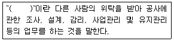
- 용역
- 도급
- 하도급
- 수급
(정답률: 79%)
95. 다음 중 감리사의 주요 임무 및 책임사항으로 틀린 것은?
- 감리사는 설계감리 업무를 수행함에 있어 발주자와 계약에 따라 발주자의 설계감독 업무를 수행한다.
- 감리사는 해당 설계용역의 설계용역 계약문서, 설계감리 과업내용서, 그 밖의 관계 규정 내용을 숙지하고 해당 설계용역의 특수성을 파악한 후 설계감리 업무를 수행하여야 한다.
- 감리사는 설계용역 성과검토를 통한 검토업무를 수행하기 위해 세부 검토사항 및 근거를 포함한 설계감리 검토목록을 작성하여 관리하여야 한다.
- 감리사는 설계자의 의무 및 책임을 면제시킬 수 있으며, 임의로 설계용역의 내용이나 범위를 변경시키거나 기일 연장 등 설계용역 계약조건과 다른 지시나 결정을 하여서는 안 된다.
(정답률: 82%)
96. 다음 문장의 괄호 안에 들어갈 내용으로 가장 적합한 것은?
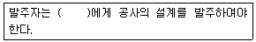
- 공사업자
- 용역업자
- 도급업자
- 수급인
(정답률: 77%)
97. 일반적인 경우 통신관련 시설의 접지저항은 몇 [Ω]이하를 기준으로 하는가?
- 10[Ω]
- 50[Ω]
- 100[Ω]
- 500[Ω]
(정답률: 67%)
98. 다음 중 전파법에 의한 적합인증 대상기자재에 해당되는 것은?
- 의료용 고주파 이용기기
- 위성방송 수신기
- 산업용 고주파 이용기기
- 자계유도식 무선기기
(정답률: 52%)
99. 전파응용설비의 고주파출력측정 및 산출방법은 누가 정하여 고시하는 바에 의하는가?
- 과학기술정보통신부장관
- 한국전자통신연구원장
- 중앙전파관리소장
- 한국방송통신전파진흥원장
(정답률: 71%)
100. 무선설비의 안전시설기준 중 고압전기란?
- 300볼트를 초과하는 고주파 및 교류전압과 500볼트를 초과하는 직류전압
- 500볼트를 초과하는 고주파 및 교류전압과 600볼트를 초과하는 직류전압
- 600볼트를 초과하는 고주파 및 교류전압과 700볼트를 초과하는 직류전압
- 600볼트를 초과하는 고주파 및 교류전압과 750볼트를 초과하는 직류전압
(정답률: 82%)